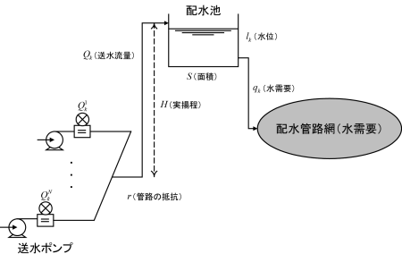

|
上水道送水ポンプ運用計画のための最適化ベンチマーク問題
問題概要
上水道送水ポンプ運用計画問題は，図1に示すような送水プロセスにおいて，水需要を満たしながら，配水池水位を所定の範囲に保ちつつ，送水ポンプの起動停止回数，消費電力量を最小にするように送水ポンプの運転状態を計画する問題である。
本問題では，ポンプ6台の送水プロセスの24時刻運用計画問題を提供する。
定式化については，文献[1], [3]を参考にされたい。

図1：送水プロセス（文献[1]から引用）
問題の部類・規模
- 問題のクラス：非線形離散変数2目的最適化問題
- 決定変数の数：24（連続：0，離散：24）
- 不等式制約条件数：73（線形：24，非線形：49）
- 等式制約条件数：0（線形：0，非線形：0）
Known Feasible Solutions
| 解法 |
目的関数値
（パレート解） |
制約違反 |
文献 |
報告者 |
解 |
| 合計値 |
許容量 |
| A*探索アルゴリズム |
f1 = 2, f2 = 3417.83764
f1 = 3, f2 = 3306.95791
f1 = 4, f2 = 3277.06181
f1 = 6, f2 = 3251.44448
f1 = 8, f2 = 3224.37637
|
0 |
0 |
[2] |
Y. Ueno, et al. |
解† |
| ランダムサーチ + ε-制約法 |
f1 = 3, f2 = 3365.29934
f1 = 4, f2 = 3334.67785
f1 = 5, f2 = 3281.34058
f1 = 6, f2 = 3277.06181
f1 = 7, f2 = 3254.27247
f1 = 8, f2 = 3224.37637
|
0 |
1.0 × 10-10 |
[1] |
T. Okamoto |
解† |
†取得したファイルを解凍し，テキストファイルをソースコード内の「P2_solution_y.txt」と差し替えて下さい。
ソースコード
P2.zip (C/C++) — 使用法は「Readme.txt」を参照。
参考文献
| [1] |
電気学会 情報知能システムの新展開とその産業応用調査専門委員会：「産業応用のための最適化ベンチマーク問題集」, 電気学会技術報告 第1287号, 3.3節 (2013) |
| [2] |
Y. Ueno, K. Mori: "Optimizing pump operation scheduling for water supply systems", Proc. of IEEE Int. Conf. on System Science and Engineering 2014, pp. 171–174 (2014) |
| [3] |
K. Yokokawa, T. Okamoto, A. Kawagoe, Y. Ueno, and K. Mori: "Formulation and solutions for daily operation scheduling problem of water supply pump", Proc. of the first IEEJ International Workshop on Sensing, Actuation, and Motion Control (SAMCON2015), IS1-4 (2015) |
更新履歴
- Sept. 18th, 2014: Known Feasible Solutionsに新たな解を追加。
- June 3rd, 2014: 制約違反許容量を外部ファイルから読み込む形式に変更。
- Mar. 13th, 2014: パラメータを外部ファイルから読み込む形式に変更。デストラクタの修正。
- Nov. 7th, 2013: ソースコードを公開。
|
|
|